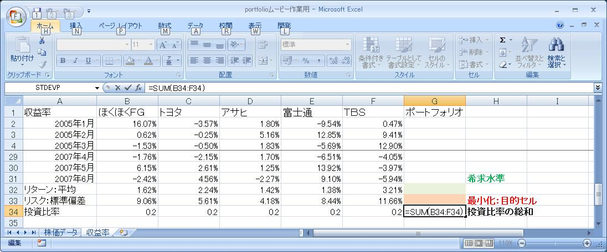
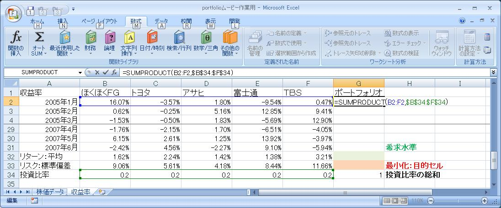
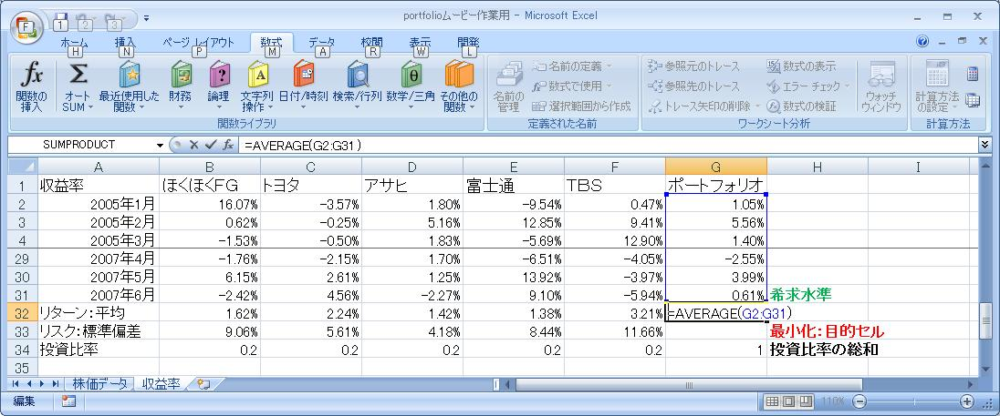
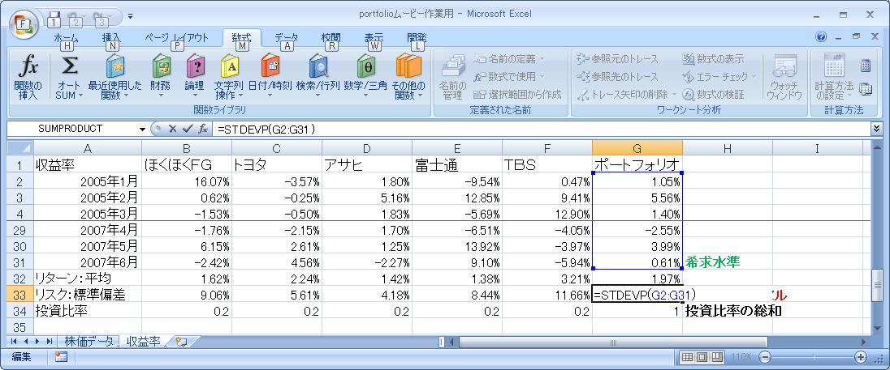

富山大学経済学部
経営モデル分析
学習ユニット〜マーコビッツのＭＶモデルと最適ポートフォリオ〜
ユニット２
I. ポートフォリオのリターンとリスク：復習
- ここのエクセル・データ（右クリックでダウンロード→ファイルに保存）に基づき、各々の銘柄の月次収益率を求めなさい。
- 収益率のデータから、各々の銘柄のリターン（収益率の平均）とリスク（収益率の標準偏差）を求めなさい。
- 各銘柄に等分比率で投資した場合の、ポートフォリオのリターン（収益率の平均）とリスク（収益率の標準偏差）を求めなさい。
入力例：ステップ２
手順（ポートフォリオ）：収益率→平均→標準偏差
この手順もすでに、練習済みなのでかんたん♪ 平均と標準偏差はよこっちょからコピペで。
- 投資比率（暫定値）：和は１（１００％）
５銘柄に等分なので、0.2づつ。オートサムでちゃんと１００％になることを検算。ここに入力したセルはあとでソルバーでも使うので重要。
>
- 収益率＝Σ（投資比率×各銘柄の収益率）＝ＳＵＭＰＲＯＤＵＣＴ
最初の月次分を求めればあとはコピペ。そのためにも$投資比率$は絶対参照。
>
- リターン（平均）＝ＡＶＥＲＡＧＥ（次もまとめて、よこっちょからコピペでＯＫ）
>
- リスク（標準偏差）＝ＳＴＤＥＶＰ
>